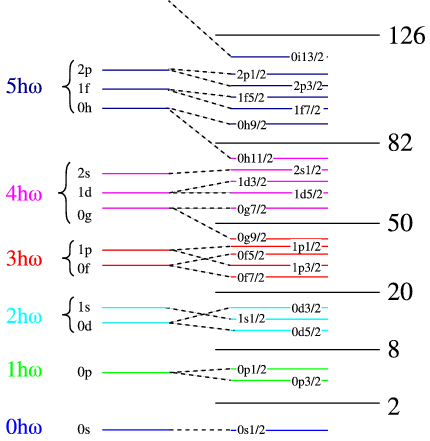

MF2 2024/04/15
Table of Contents
0.1. Zgradba jeder
0.1.1. Transcending kapljični model
Vstavi skico \( |w_v(A)| \), ki jo bo prof. dal na spletno učilnico. Gladka krivulja z vrhovi, ki izstopajo tekom nje (pri določenih vrednosti A (oz. Z in N)), kar pomeni, da so bolj vezana kot ponavadi. Vrednosti so pri \( Z, N = 28 \), \( Z, N = 50 \), \( Z, N = 82 \), itd. Temu pravimo magična števila.
Izrazita odstopanja vezavnih energij jeder od napovedi semi-empirične metode masne formule za \( Z, N = 2,8, 20, 28, 50, 82 \).
- Enojno magično jedro: Z ali N magično
- dvojno magično jedro: Z in N magično
za nadpovprečno vezana.
Spominja na strukturo vezavnih energij atomskih orbital.
0.1.2. Razložitev magičnih števil
Aproksimirano povprečni jedrski potencial vseh preostalih nukleonov na posamični proton ali nevtron, čemur rečemo efektivni jedrski potencial. Pogledali si bomo enonukleonska stanja, ločeno za protone in nevtrone, ter zanemarimo vpliv Coulumbske sile.
0.1.3. Lupinski model jedra
Predpostavimo sferično simetrična jedra. Poglejmo radialno odzivnost efektivnega jedrskega potenciala,
S8.1
Tega potenciala ne znamo lepo analitično opisati, saj je funkcija zlepljena, da je zvezno odvedljiva. Za aproksimacijo bomo vzeli harmonski oscilator (kvadratno).
Povprečni potencial je
\begin{equation} \label{eq:67} \bar{V} (r) = \frac{1}{2} m \omega ^2 r ^2 \end{equation}S tem nastavkom lahko rešimo SSE in dobimo lastne energije takega potenciala. SSE ima obliko
\begin{equation} \label{eq:68} - \frac{\hbar ^2}{2m} \nabla ^2 R(\vec{r}) + \frac{1}{2} m \omega ^2 r ^2 R(\vec{r}) = E'R(\vec{r}) + \text{robni pogoj} \left. \right | _{r \to \infty} = 0 \end{equation}kartezični nastavek \( R(\vec{r}) = R_{n_x} (x) R_{n_y} (y)R_{n_z}(z) \)
\begin{equation} \label{eq:69} - \frac{\hbar ^2}{2m} \frac{d ^2 R_{n_x}}{dx ^2} + \frac{1}{2} m \omega ^2 r ^2 R_{n_x} = E'_{n_x} R_{n_x} \end{equation}kjer je \( E_{n_x} = \hbar \omega (n_x + \frac{1}{2}) \) ter enako naredimo za \( R_{n_y} \) in \( R_{n_z} \).
Potem velja
\begin{equation} \label{eq:70} E' = \hbar \omega (n + \frac{1}{2}), \, n = n_x + n_y + n_z = 1 \end{equation}Preštejemo degenerira stanja
- \( n = 1 \): \( 1, \, n_x = n_y = n_z = 0 \)
- \( n = 2 \): \( 3, \, n_x = 1 \text{ ali } n_y \text{ ali } n_z = 1, \, \text{ ostala dva } = 0 \)
- \( n = 3 \): \( 6, \, n_x, n_y, n_z = 2; n_x= 1 = n_y, n_z = 0; n_x = n_z = 1, n_y = 0;, n_y = n_z = 1, n_x = 0 \)
- za \( n \): \( \frac{1}{2}(n + 1)n \times 2 \) zaradi spina nukleonov \( \implies n(n + 1) \) degeneracija
v krogelnih koordinatah (uvedemo še dodatno KŠ, vrtilno količino (glavno KŠ, KŠ vrtilne kol. ter projekcijo nje))
\begin{equation} \label{eq:71} - \frac{\hbar ^2}{2m} \frac{\partial ^2 R(r)}{\partial r ^2} + \left[ V(r) + \frac{l(l + 1) \hbar ^2}{2m r ^2} \right] R(r) = E'R(r) \end{equation}Iz tega sledi
\begin{equation} \label{eq:72} n = n_r + l + i \end{equation}\( n_r \) je glavno število in je št. ničel radialne valovne funkcije R(r) in zaseda vrednost \( n = 0, 1, 2, \ldots \), tirna vrtilna količina pa je omejena z \( n_r \) in zaseda vrednosti \( l = n-1, n-2, \ldots, 0 \)
Sprektroskopsko oznako \( n, l \)
\begin{align*} l &= 0: s \\ l &= 1: p \\ l &= 2: d \\ l &= 3: f \\ \end{align*}Pri danem \( l \) je defeneracija \( (2l + 1) \times 2 \), zadnja dvojka zaradi spina nukleona.
0.1.4. Št. stanj
Pri
\begin{align*} n &= 1: n_r = 0, l = 0: 2 \times 1s \text{ stanje}\\ n &= 2: n_r = 0, l = 1: 6 \times 1p \text{ stanj} \text{ in } n_1 = 1, l = 0: 2 \text{ stanji}\\ n &= 3: n_r = 0, l = 2 \text{ or } \text{10 stanj} \end{align*}Drugi člen \( n = 2 \) je energijsko bližje \( n =3 \) in imamo tako skupaj pri \( n = 3 \) 12 možnih stanj. Zaporedne delne vstoe so \( 2 + 6 + 12 + 20 + 30 + 42 \ldots \)
\[ \implies 2, 8, 20, 40, 70, 112, \ldots \]
Prve tri številke so magične ṡtevilke, ostale pa niso. Lastne energije postanejo odvisno od \( l \), kar je posledica sklopitve spin tira (zlomijo se projekcije)
0.2. Sklopitev spin-tir
Efektivni jedrski potencial je nekoliko globji (stanja so bolj vezana) v stanjih, ko sta tirna vrtilna količina in spin nukleona v isti smeri. Energije \( E' \) in rešitve \( R \) postanejo odvisne od \( j \) (celotna vrtilna količina) in \( m \). Stanja z večjim kvantnim številom celotne vrtilne količine \( j = l \frac{1}{2} \) so bolj vezana kot stanja z \( j = l - \frac{1}{2} \). To je točno obratno kot pri atomih. Efekt je precej večji vpliv kot pri atomih in s tem spremeni urejenost stanj.
Degenerirana ostanejo stanja pri \( j = l + \frac{1}{2} \) (stanja, ki so bolj vezana): stanj je \( 2l + 2 \). Pri \( j = l - \frac{1}{2} \) je \( 2l \) stanj.
Skupina degeneriranih enonukleonskih stanj pri \( j \) in \( l \) so podlupine. Podlupine imajo spektroskopske oznake, ki so sposojene iz atomske fizike \( l_j (P _{\frac{1}{2}} \text{ ali } P_{\frac{3}{2}} \text{ za } l = 1) \)
Skupine podlupin, ko so blizu v energiji, označujem z zaporednim število po naraščajoči energiji. Zaradi LS sklopitve to ne ustreza glavnemu številu harmonskega oscilatorja.

Stanja harmonskega oscilatorja
1. Razpadni zakon
Osnova je, da znamo izračunati, izmeriti, verjetno za razpad na časovno enoto.
\begin{equation} \label{eq:73} \frac{dN}{dt} = - N \Gamma \end{equation}kjer je \( \Gamma \) proporcialnostna konstanta in ima enote \( [s ^{-1}] \), in se ji reče razpadna širina. Namesto širina govorimo o razpadnem času. Lahko definiramo inverzno vrednost \( \Gamma = \frac{1}{\tau} \), kjer je \( \tau \) razpadni čas.
\( N \) predstavlja število jeder v vzorcu. Diferencial na levi šteje število razpadov na časovno enoto in se ji reče aktivnost z enotami \( [\frac{1}{s} = Bq] \) Becquerel je enota.
Rešitve:
\begin{equation} \label{eq:74} N(t) = N_0 e^{- \frac{t}{\tau}} \end{equation}kjer je \( N_0 = N(t=0) \).
Če imamo več možnih razpadnih načinov, ki se razlikujejo po \( \Gamma \) oz. različnih razpadnimi časi.
\begin{align*} \frac{dN}{dt} &= - N [\Gamma_1 + \Gamma_2 + \ldots] \frac{dN}{N} = - \frac{dt}{\tau_1} - \frac{dt}{\tau_2} + \ldots & \implies N = N_0 e ^{- \frac{t}{\tau_1}} e^{- \frac{t}{\tau_2}} \ldots \end{align*}Skupni razpadni čas je
\begin{equation} \label{eq:76} \frac{1}{\tau} = \frac{1}{\tau_1} + \frac{1}{\tau_2} + \ldots \end{equation}Razvejitveno razmereje je verjetnost, da jedro razpade na dani način [0, 1]. \[ \frac{\tau}{\tau_1}, \frac{\tau}{\tau_2}, \ldots \] kar je za posamične razpade.
1.1. Jedrski razpadi
1.1.1. Sevanje \( \gamma \)
Vzbujena stanja jeder, ki so v vzbujeni nihajni, vrtilni načini prehajajo nazaj v osnovno stanje in pri tem izsevajo foton.
V ekstremnih primerih (če je energija reža vzbujenega stanja večja od \( \approx 8 MeV \)) se izseva cel nukleon.
Nukleon v vzbujenem stanju povzroči deformacijo jedra.
Najnižje je /električno sevanje
\begin{align*} \bar{P} &= \frac{c k ^4 \left| \vec{p}_e \right| ^2}{3\pi \epsilon_0}, \, ck = \omega \\ &= hV \frac{dn_j}{dt} \end{align*}definiramo \( hV = E_{12} \) kar je energijska reža med stopnjema 1 in 2, definiramo \( E_{12} = \hbar \omega_{12} \)
\begin{equation} \label{eq:78} P = \frac{1}{\tau} = \frac{\omega_{12} ^3 \left| \vec{p}_{e12} \right| ^2 }{3\pi\epsilon_0 \hbar} \end{equation}Definiramo matrični element operatorja električnega dipolnega momenta \( \vec{p}_{e12} \) med začetnim in končnim stanjem jedra.
Definiramo
\begin{equation} \label{eq:79} \vec{p}_{e12} = \int R_1^{*}(\vec{r}) \vec{p}_e R_2(\vec{r}) \,d\vec{r} \end{equation}Energijska reža bo enaka izsevanju fotona.
Primer:
Imamo \( E_{12} = 1 MeV, A = 100, \left| \vec{p}_e \right| \approx e_0 r_j \approx e_0 r_0 A^{\frac{1}{3}} \approx e_0 5fm \), kar pomeni, da je \( \tau = 10^{-16}s \)